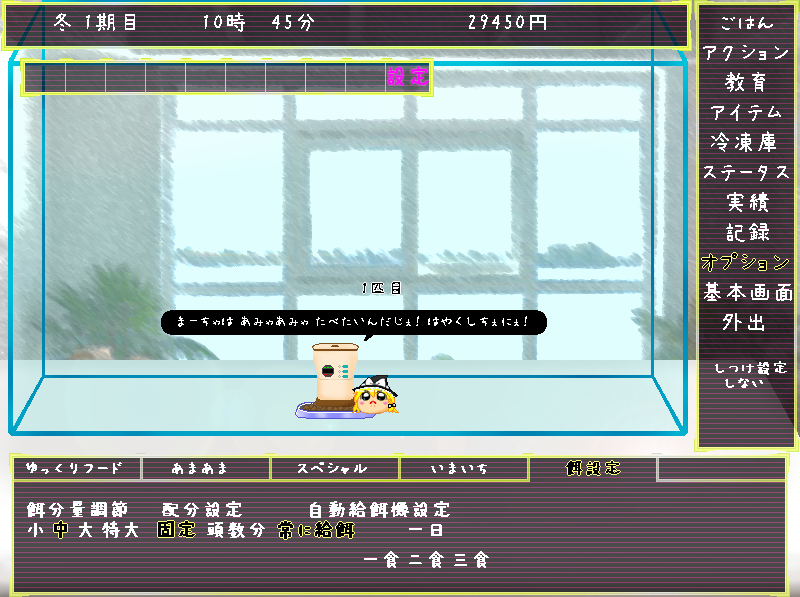

|  |
餌に関する設定画面です。 餌分量調節……一度に出す餌の量を設定します。 配分設定……頭数分を選択すると、水槽内のゆっくりの数×餌分量設定になります。 自動給餌器設定 常に給餌……常に一定量が保たれるように給餌し続けます。 一日一食……毎日お昼に分量設定で設定した分だけの量を１度だけ給餌します。 一日二食……毎日朝晩に分量設定で設定した分だけの量を１度だけ給餌します。 一日三食……毎日朝昼晩に分量設定で設定した分だけの量を１度だけ給餌します。 「ゆっくり」は食欲が旺盛です。常に給餌しない場合、一度に出す分量や１日の回数によっては高確率で餓死してしまうので気を付けましょう。 |